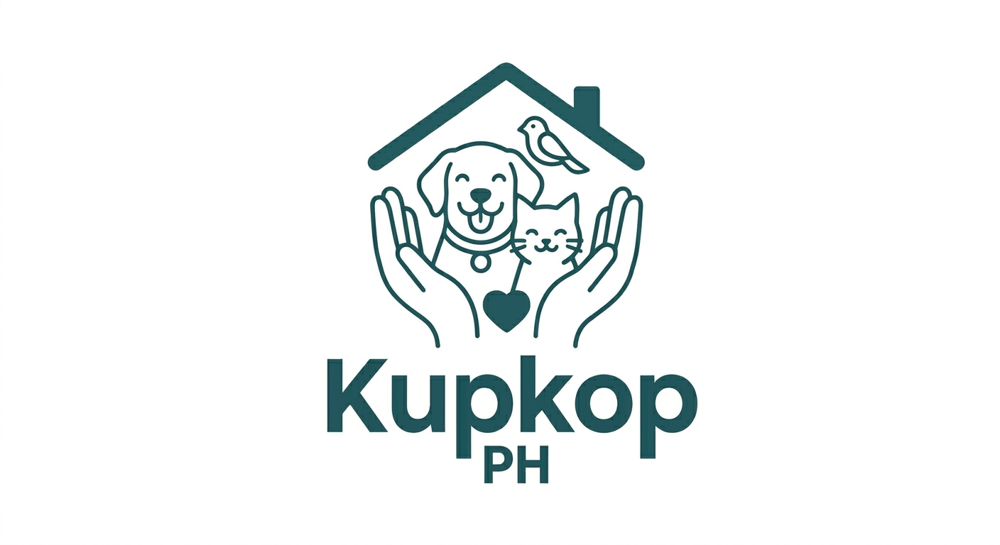
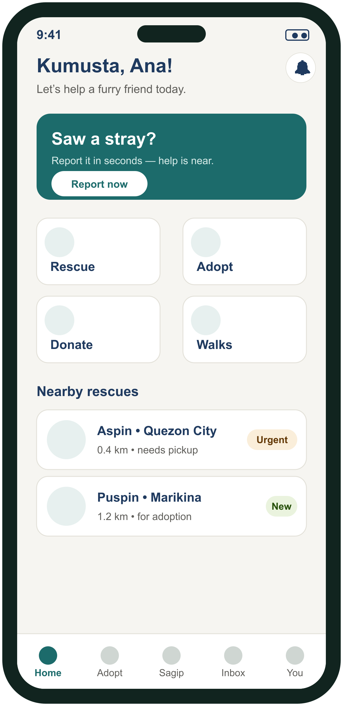
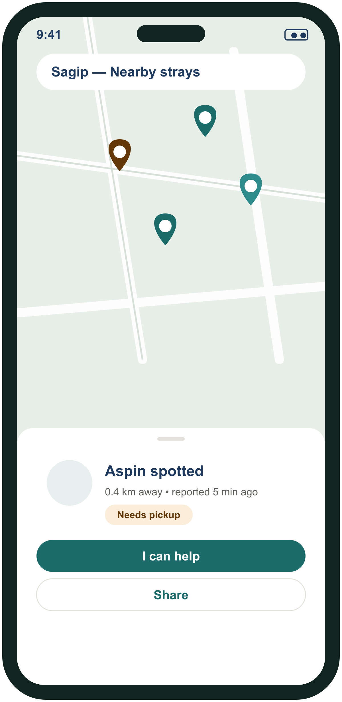
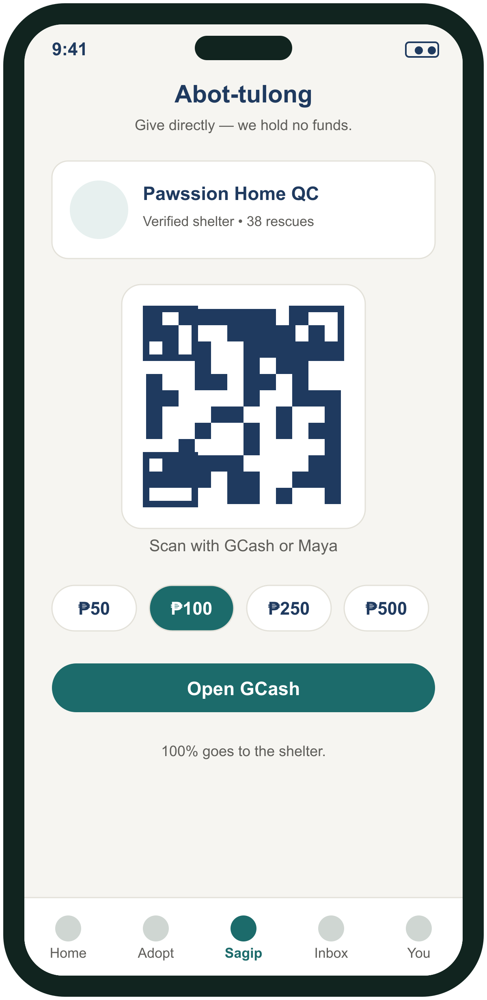

Kupkop PH brings rescue, adoption, and community support into one app — so every stray has a chance and every fur parent can help. Starting with Sagip, our animal-welfare community.

Thousands of strays roam Philippine streets, and shelters run on heart and little else. Kupkop PH connects the people who want to help with the animals who need it.
Drop a pin on the map, add a photo, and the nearest verified rescuers and shelters are notified instantly.
A verified rescuer claims the case, and you follow every status update — pickup, vet, and recovery.
Once safe, animals move into adoption. Or give through Abot-tulong, join a walk, or share their story.
The full Sagip module at launch — more services and AI-assisted features to follow.
Map-based reports, real-time alerts to nearby rescuers, claim flow, and full status history.
Browse rescues ready for a home, send inquiries, and adopt — rescue-to-adoption handled seamlessly.
Give directly to shelters through GCash or Maya QR. Kupkop PH never holds the money.
Here’s where we’re headed — report a stray, give in seconds, and help from your pocket.



Design previews — the app is in development and screens may change.
We’re launching in Metro Manila first. Join the waitlist and we’ll tell you the moment the app goes live.
Join the waitlist